A Gentle Introduction to Interactive Programming
WORK IN PROGRESS. All pages subject to change.
Source for this book available here.
This resource is intended for learners with little to no programming experience.
Goals of this book:
- Gradually introduce core programming concepts
- Use plain English, and explain all jargon used
- Teach the Clojure programming language
Future goals:
- Provide overviews of programming languages and developer roles
- Add in fun technical history where relevant
Introduction
Welcome to A Gentle Introduction to Interactive Programming! The goal of this book is to provide a straight-forward, plain English introduction of core programming concepts, through the use of the Clojure programming language.
Some of the concepts we'll be covering are:
- basic data types
- variables and definitions
- functions
- conditions
Why Learn Programming?
TODO
Why Clojure?
This book uses the Clojure programming language as its learning language. Clojure has relatively simple syntax*, and is especially good at making processing data simple.
One aspect of Clojure's reputation is that it's largely used by more experienced developers. Often, its users will have a number of years of experience in other languages, then find Clojure and love it. Likewise, many Clojure resources assume some degree of familiarity with programming as a whole.
That being said, I believe Clojure is a fantastic language for learners, for one key reason: it is extremely interactive. As we will get to, developing in Clojure allows you to get instant feedback on (almost) all your code, allowing you to rapidly check your work. This also makes it a great language for just playing around and experimenting in. On top of all that, I and many other feels that Clojure is just plain enjoyable and fun.
* syntax refers to the structure of code and how it's written
What can you do with Clojure?
Every programming language has one or several things that it's particularly well-suited for, and usually a few things that it doesn't do especially well. To be upfront: Clojure isn't the best choice for a 3D video game, for instance.
Outside of 3D video games, Clojure is very well-suited for creating web applications and business applications, as well as more simple utilities. Clojure is excellent for just about anything involving processing and manipulation of data.
Data & Code
There are two primary elements we deal with when programming: data and code*.
Data is any piece of digital information, and can take many forms. This could be a spreadsheet of accounting information, a digital photograph, an MP3 music file, or just some plain text.
Code is the actual instructions to be executed by a computer. It runs the tax calculations on the accounting spreadsheet, applies an effect to the photograph, boosts the bass of the MP3, and runs spell checking on the text.
* Clojure and its sibling languages actually allow you to blend code and data together in amazing ways - which you'll experience with intermediate-level Clojure.
Data Types
Data can take the form of either single, individual values, or structures which can contain more than one value.
Scalar values
The technical term for a piece of data that cannot be broken down any further is a scalar. We'll now go over the fundamental scalar types available to us in Clojure.
Numbers
There are two important things to note about numbers in computing:
- there is a distinction between numbers with or without a decimal point
- the data types that hold numeric values have sizes, which determine how big a number they can represent (is this relevant to a beginner?)
We'll address these points in more detail later on.
For now, know that whole numbers without a decimal point are called integers,
such as 1, 100, or 9841098; and numbers with decimal points are called floats,
such as 3.14 or 81.9841.
Text
A character is a single unit of text, such as a letter, a piece of punctuation, a digit, or special character.
A sequence of characters to form a word, sentence, or longer, is called a string (as in, the characters are strung together).
Characters and strings are typically surrounded by single and/or double quote characters,
depending on the language.
In Clojure, strings are surrounded by double quotes like "Hello!", while
characters can be preceded by a backslash like \c.
Truthiness
The technical term for a value that can be either true or false is a boolean. These can often be thought of as the answers to yes-or-no questions.
Did I walk the dog this morning? Yes (true).
Sequences
There are a number of ways of storing a series of multiple scalar values. Two ways available to us in Clojure are lists and vectors.
Side note: Clojure descends from a language called Lisp, whose name comes from shortening "list processer".
We'll start with vectors, which are a series of values surrounded by square brackets:
["hi" "hello" "yes" "indeed" "hm" "quite"]
Vectors and lists are numerically indexed, starting at 0. In the vector above:
- index 0 is "hi"
- index 1 is "hello"
- and so on
TODO: explain indexing and add diagram
To write a list literal*, you surround a series of values with parentheses, with a single quote at the beginning:
'(1 2 3 4 5)
* literal means the way of writing a constant value
We'll get to why that single quote is necessary when we cover syntax more in depth.
The basic difference between lists and vectors is:
- lists are fast to add items to, but slow to find a specific item
- vectors are slower to add items to than lists, but fast to find specific items
This book will largely be using vectors in its examples.
Key-value pairs
A structure known as a hash map or simply map is the bread and butter of passing data around in Clojure. Think about IDs like on passports and drivers license. With one value, a government system can look up data on a person.
Maps have keys which are values that serve as identifiers, and a matching value, which could be any type of data, incuding other maps!
A map is defined as series of keys followed immediatedly by their value within curly brackets. There is no separator between a key and its value besides a space, and while you can optionally separate pairs by commas, conventionally we put each pair on its own line.
A simple example:
{"key1" "value1"
"key2" "value2"}
A lookup table* of month number and their short month names:
{ 1 "Jan"
2 "Feb"
3 "Mar"
4 "Apr"
5 "May"
6 "Jun"
7 "Jul"
8 "Aug"
9 "Sep"
10 "Oct"
11 "Nov"
12 "Dec"}
* lookup tables are convenient ways of converting one value to another
In Clojure, lists, vectors and maps all fall under the category of collection.
Sets
A set contains only unique values.
It's a bit like solely the keys of a hash map.
#{"foo" "bar" "baz"}
Calling Code
Code, as mentioned, is a series of instructions for a computer to execute. Let's start by adding two numbers together.
(+ 2 2)
There's actually quite to show with this one line! The code box you see above is interactive, and you're free to modify its contents to see what you get.
Why does this code have parentheses around the plus sign and two numbers? And why does the plus sign appear before the two numbers?
Let's take a step back for a moment and discuss the syntax of Clojure and the Lisp family. Lisps such as Clojure consist of expressions, and an expression can be either a value, or a list where the first element is an operation to be applied to the other elements of the list.
In this case, we're performing an addition operation (represented by the plus sign) on the numbers that follow. This syntax, and how addition is implemented in Lisps, allows us to add together however many numbers we want, without having to write a plus sign between each one.
(+ 1 2 3 4 5 6 7 8 9)
Subtraction, multiplication, and division also function the same way.
(- 10 3 2)
(* 5 5)
(/ 50 5)
We can also chain series of expressions. When we do this, we often pretty-print them by putting one expression on each line to improve readability.
(+ (- 10 3 2)
(* 5 5)
(/ 50 5))
Variables
A variable is a piece of data we give a specific name to,
so we can easily use it from multiple places.
Variables are defined using the def operation,
where the first element following it is a symbol
representing the variable's name, and the following element is an expression
that represents the variable's value.
For instance, here we define a variable named 'message' the string value
"Hello, world!":
(def message "Hello, world!")
We can also define a variable to be the result of an operation:
(def four (+ 2 2))
four
You'll also notice two other interesting things with these snippets.
In the first, the editor printed #'cljs.user/message.
In the second, it printed the value of our variable four.
When you evaluate Clojure code within your editor, it automatically displays the result. When we define a variable, the result is full name of the variable (we'll get into more detail about that later). When we evaluate a variable, we get its value.
Functions
We're far from limited from the operators provided to us by Clojure. Let's define operations of our own called functions.
We can define a function with defn, followed a symbol for its name,
and a vector of symbols for its input.
When we define a function, any inputs defined are referred to as parameters.
When we evaluate a function, any inputs we pass in are referred to as arguments.
Here we define a function named add-ten which takes an input parameter x.
We then evaluate that function, passing in 5 as the argument.
You'll see that x, within the body of the function, takes the place of the
value we pass in.
(defn add-ten
[x]
(+ 10 x))
(add-ten 5)
Functions as Data
And now for something magical: in Clojure, code...
is also data!
Fundamentally, we can also define a function using a regular def:
(def add-ten
(fn [x]
(+ 10 x)))
(add-ten 5)
The form (fn *args* *body*) is known as an anonymous function
- a function without a name we can call it by.
In the above code, we use def to give a name to function.
In reality, the defn operation is actually a wrapper* around
def and fn, with some other features baked in that we'll get to later.
* wrappers are pieces of code that combine some other components, usually in a simplified way
Data & Code Practice
We can check if two values are equal using the = operator.
These practice problems gradually get more difficult.
(= 4
(+ 2 2))
Modify the following code examples, replacing the underscores with values,
so the editor prints true.
(= 10
(+ 3 _))
(= 30
(* 5 _))
(= _
(/ 36 9))
(= _
(+ (* 3 4)
(/ 40 5)))
(defn times-five
[x]
(* 5 x))
(= _
(+ (times-five 4)
5))
(defn square
[x]
(* _ _))
(= 9
(square 3))
Challenge problem time! Hint: you can reference a variable within a function, even if that variable isn't part of the function's input.
(def pi 3.14)
(defn circle-circumference
[radius]
(* _ _ _))
(= 12.56
(circle-circumference 2))
Editing & Development
Programmers rarely use basic text editors. Instead, we use integrated development environments (IDEs), full of tools and features that making programming easy and more productive.
Visual Studio Code has quickly become the most popular free IDE. There are numerous plugins for VS Code that extend its functionality, including Calva - the de facto Clojure plugin for this IDE.
The development setup that we'll be configuring in this book consists of VS Code + the Calva plugin, and a few other components.
Java
Let's take this moment to mention how Clojure actually runs. Programming languages provide a human-readable way of providing instructions to computers, and the code you write is compiled down to a lower level of operations to eventually run on hardware. Some languages compile directly to machine code for this purpose.
Clojure, however, targets language platforms, primarily the Java Virtual Machine (JVM). The JVM was originally written for the Java programming language - a language we'll be repeatedly referencing throughout this book. Not only is the JVM a robust, high-performance platform for running software, there's a huge number of Java software components - called libraries - that Clojure automatically gains access to by being on the JVM.
To be able to run Clojure and other JVM software, however, we need to install Java and the JVM separately.
Leiningen
When we develop software, we don't operate on just one file of code. Our code is broken up into pieces across files and folders, forming a codebase within a project. We also don't write everything ourselves. As mentioned, there are numerous pre-built software components freely available to us, written in Clojure or Java, which we can require and include as dependencies.
We therefore need a project build tool, to be able to build our codebase as a single piece of software (or even multiple components), as well as to manage our dependencies.
The de facto tool for this in the Clojure space is leiningen, which we will also install and be using in our examples.
Windows
Java
Because Clojure runs on the JVM, we need to first install Java. There are multiple builds and distributions of Java, however. I recommended installing the package 'Temurin 17 (LTS)' from this page. Side note: in software, the acronym 'LTS' refers to a long term support release or version.
Clojure
Official documentation for installing Clojure on Windows is here.
First, you'll want to search Windows and open up a PowerShell console. PowerShell is a combined command console and programming language developed by Microsoft for automating tasks on Windows systems.
Running the following command will set a security policy on your system that allows it to run PowerShell scripts, so long as those scripts are from a trusted author. You'll need this set for Clojure on Windows to function correctly.
Set-ExecutionPolicy RemoteSigned -Scope CurrentUser
Type y and enter.
Then run the following, which will download Clojure's installer script and run it:
Invoke-Expression (New-Object System.Net.WebClient).DownloadString('https://download.clojure.org/install/win-install-1.10.3.1087.ps1')
When prompted for install location, type 1 and enter.
Clojure should now be installed.
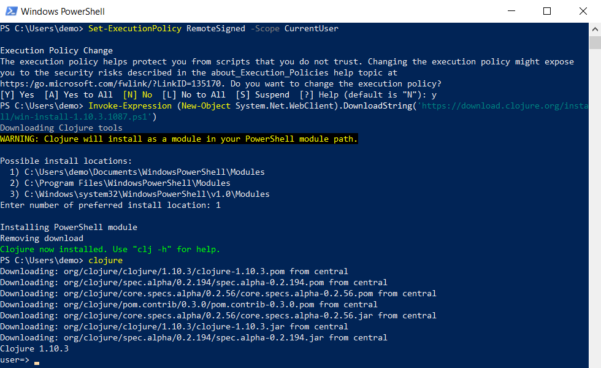
Leiningen
Setting up leinigen will take a bit of technical know-how.
First, we'll want to create a new folder where we can place executable files. This can be wherever you'd like, but let's say we'll make a folder called Programs within our Documents folder.
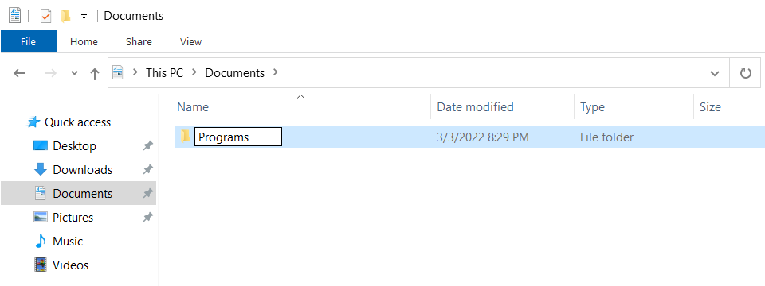
Next, search Windows for 'environ' and you'll find a control panel option titled 'Edit the environment variables for your account'.
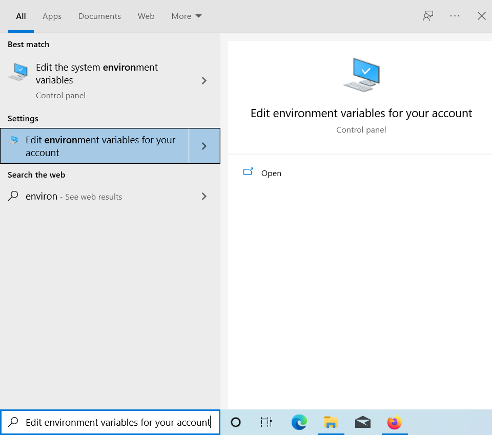 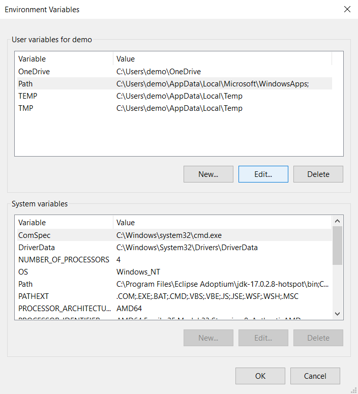
Click on 'Path', then 'Edit...'.
Add a new entry to the dialog, containing the path to the Programs folder we just created.
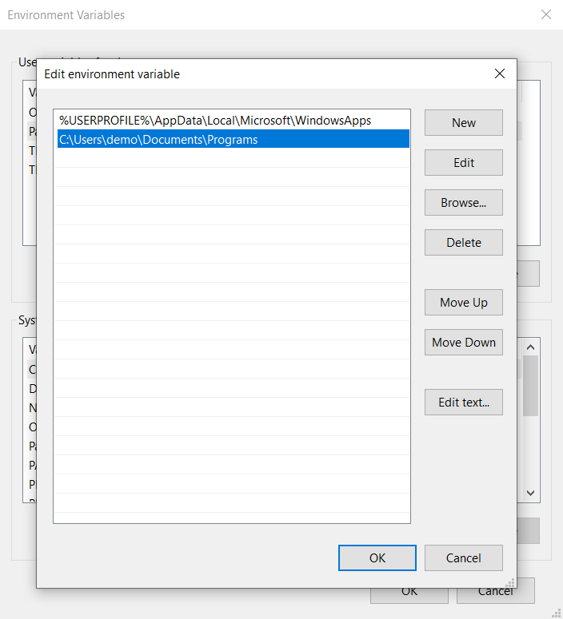
From step 1 on the leinigen website, right-click on the link to lein.bat,
hit 'Save Link As...', and save it to you the Programs folder you made, making sure to change
the 'Save as type' option to 'All Files'.
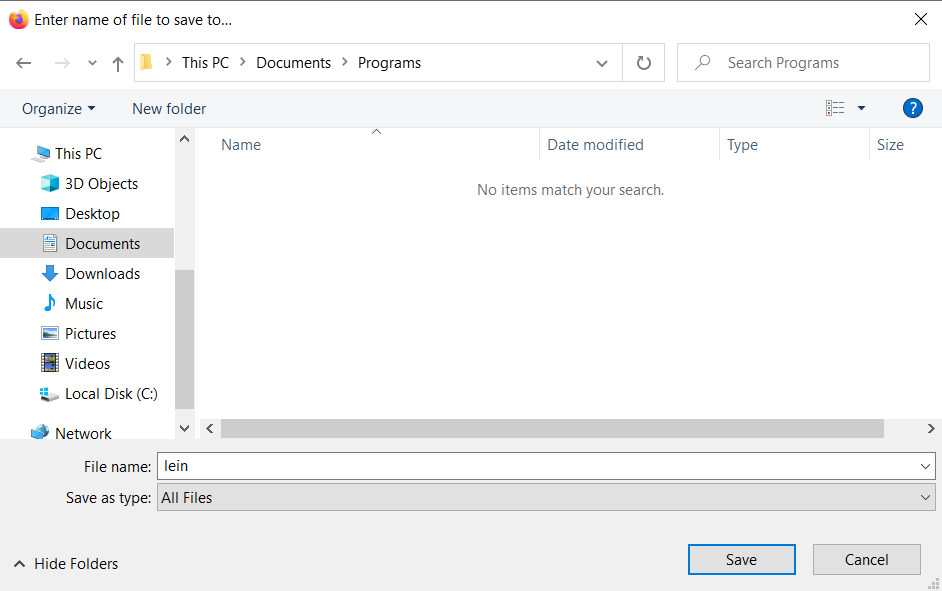
Note: Windows will try to save this as a text file by default. If this happens, make sure you can see file extensions by opening File Explorer Options, click on the View tab, uncheck 'Hide extensions for known file types', and hit apply.
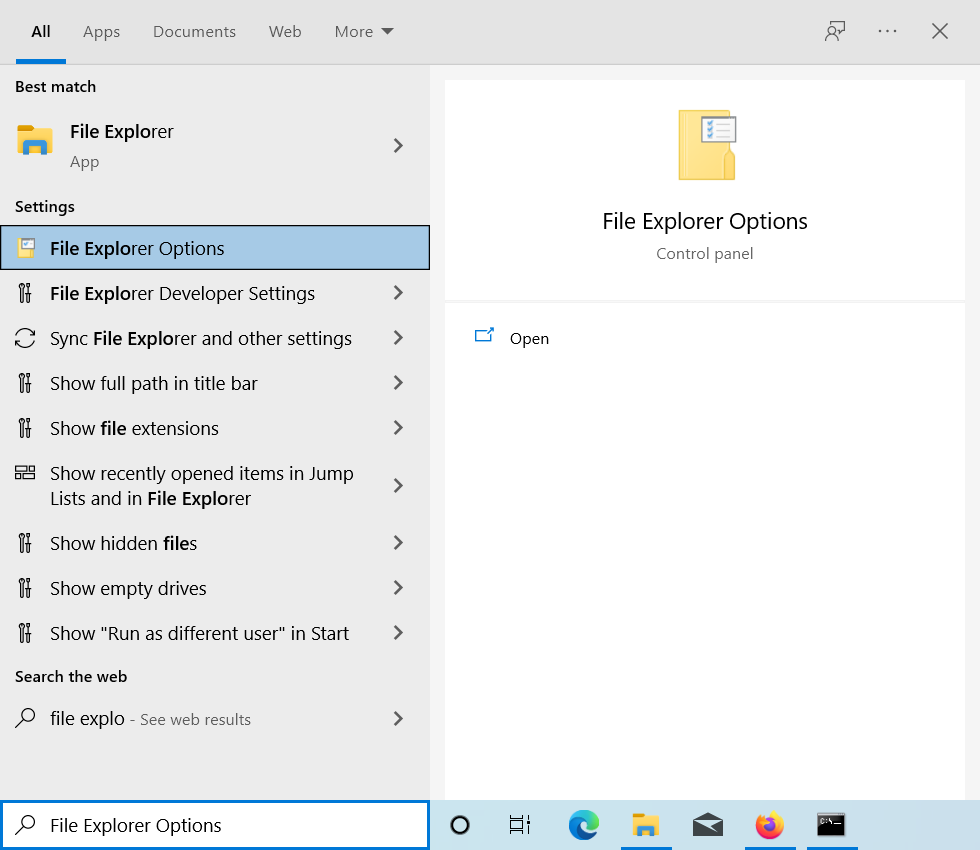 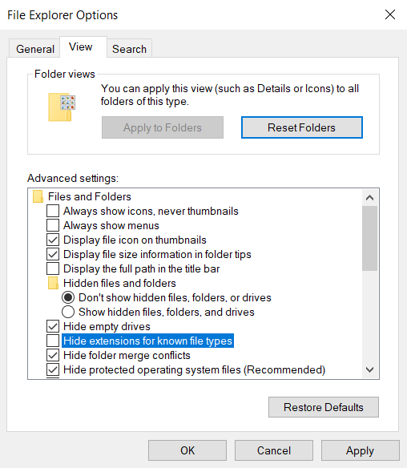
Then make make sure, renaming if necessary, that the full file name is lein.bat
and its type is Windows Batch File.
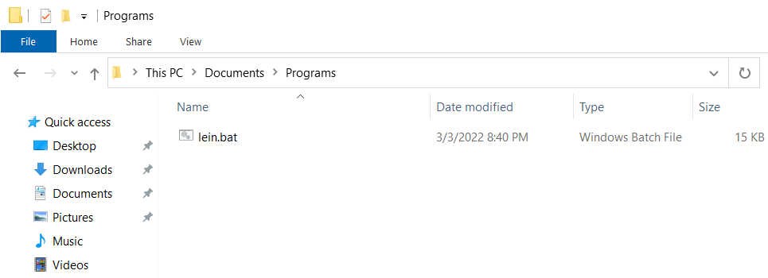
Now, search Windows for 'cmd' and open up the command prompt, and you should be able
to run lein self-install.
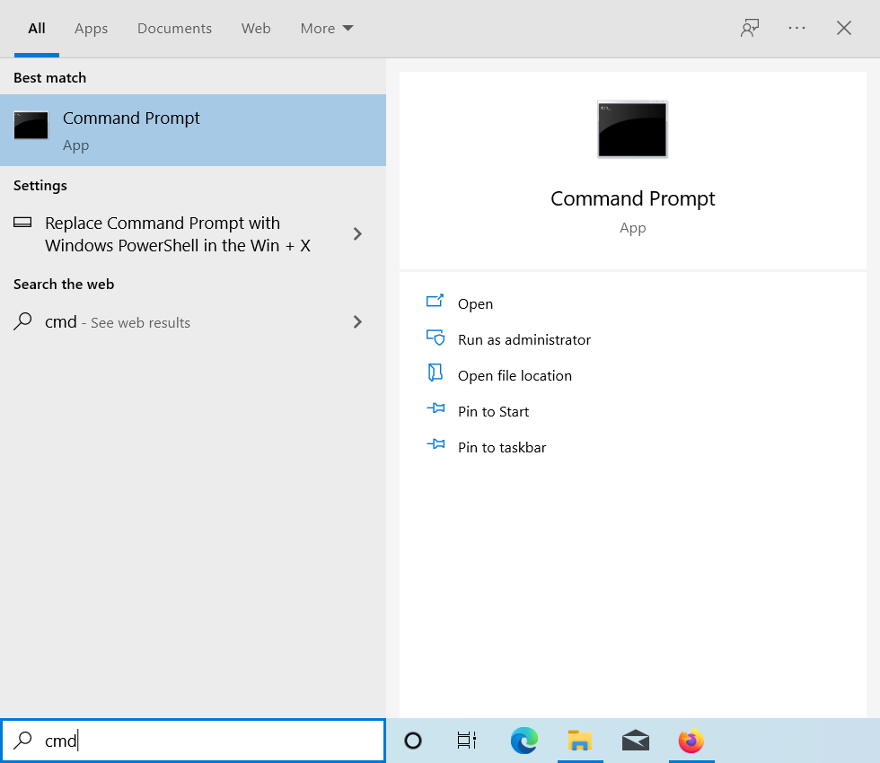 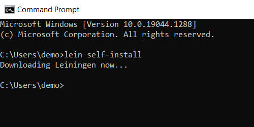
MacOS
TODO
Linux
TODO
Calva
Once VS Code is installed, open Code, navigate to the Extensions tab,
and search for plus install Calva.
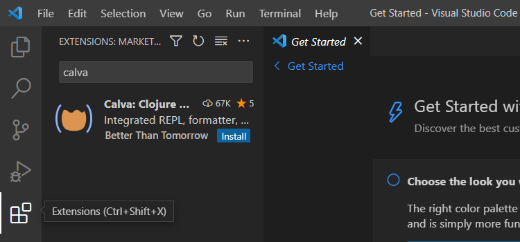
After installing Calva, go to View > Command Palette.
With a search in this command palette, you should see a command titled
'Calva: Fire up the "Getting Started" REPL'.
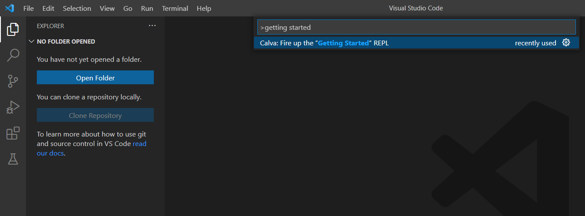
A whole lot should happen!
TODO: a whole lotta explainin'
Interactive Development
TODO
Lists & Vectors
Finding Elements
Clojure has convenience functions such as first and second
to retrieve items from a collection:
(second [1 2 3])
More generally however, specific items can be retrieved using
the nth function (as in: 1st, 2nd, 3rd ... nth).
It has the form:
(nth collection index)
Remember that indexes start at 0, not 1, so if we want to grab the 3rd element, we need to retrieve index 2:
(nth [1 2 3] 2)
nth will throw an error if you try to retrieve an index that doesn't exist:
(nth [1 2 3] 10)
There's also the get function, which in this instance functions
similarly to nth, but does not throw an error, instead returning nil.
(get [1 2 3] 10)
Now is a good time to introduce the concept of null values, called nils in Clojure. As opposed to the number 0 representing zero of something, a null is the complete absence of a value.
Adding Elements
To add an element to a list or vectors, we conjoin the
element to the collection with the conj function.
An interesting note: when we add an element to a vector,
it's added to the end.
When we add an element to a list, it's added to the beginning.
(conj [1 2 3] 4)
(conj '(1 2 3) 4)
To combine two lists or vectors into one, we concatenate them
with the concat function.
(concat [1 2] [3 4])
Generating
Let's create some data of our own, shall we?
Suppose we want to create a list of numbers from 1 to 10.
Clojure has a very useful function called range,
which has the form:
(range start end)
Let's see what we get...
(range 1 10)
Ah, almost! One gotcha here is that the end of the range is exclusive, that is, it excludes the number itself. This means that the end of our range actually has to be one higher than the end number we want:
(range 1 11)
What if we want a list of 10 fives?
Clojure has the repeat function for that:
(repeat count value)
(repeat 10 5)
Infinite Lists
Through Clojure, we can harness the power of infinity!... in a way.
Clojure has many list functions which generate infinite sequences
that you can take however many items you want from.
The take function has the form:
(take count collection)
These infinite sequences don't actually generate their values all at once. Doing so would cause a computer to run out of memory. These sequences are lazy - they only generate values when those values are requested.
repeat actually has a different form without a parameter
to specify a count of items to return:
(repeat value)
In this instance, it will return an infinite sequences of value. If you were to evaluate this by itself in your REPL, it would print a huge number of values and cause issues with your editor.
To get a list of 10 fives, we could have also written:
(take 10 (repeat 5))
Important note: here you can see that we can pass the result of evaluating a function as the argument of another function.
Manipulation & Functions as Arguments
Functions in Clojure are first-class, meaning they can be treated just like pieces of data. This includes being passed as arguments to other functions!
Many core functions in Clojure take other functions as their arguments. Often, these argument functions are used by calling function to somehow manipulate a collection of data.
Before we discuss one such function, I'd like to get a potential source of
confusion out of the way. Clojure has data structures called (hash) maps,
and it also has a function called map, which are different things.
The map function has the form:
(map function collection)
It takes a function as its first input argument, which will be applied to each element of its second input argument, a collection of data. You can think of this as mapping over the data with some operation.
Let's take for an example the helper function inc.
Its name is short for increment, as in, adding 1 to a value.
When use map to apply inc to each value in a collection, we get...
(map inc [1 2 3 4])
We showed in chapter 1.4 how to define our own functions, both named and anonymous.
Let's pass in a custom function into map:
(defn times-ten
[x]
(* 10 x))
(map times-ten [1 2 3 4])
But remember, a function doesn't need to have a name.
Instead of pre-defining a named function, we can also give map
an anonymous function in-place using fn:
(map (fn [x] (* 10 x))
[1 2 3 4])
Generation Follow-up
Earlier, to generate a list of 1 through 10, we could have also generated an
infinite list with the function iterate:
(iterate function value)
Given a starting value x and a function f, it will return an infinite
sequence of x, (f x), (f (f x)), and so on.
If we pick a starting value of 1, and use the funtion inc to increment
each item in the sequence, we should get 1, 2, 3, and so on.
Then we just need to take 10 items from the sequence.
(take 10 (iterate inc 1))
Printing Each Item
What if you want to do something to each item in a collection, but you don't care what the result is? Say for instance that you just want to display each value.
First you'll need to know the function println, which takes
one or more pieces of data, and prints a line in a console
containing the human-readable version of that data.
We can combine that with the function doseq, which does something
to each item in a sequence:
(doseq [item [1 2 3 4]]
(println item))
A lot going on there in just two lines!
Something brand new is the first argument, [item [1 2 3 4]].
doseq uses this form to bind each value in [1 2 3 4] to
the variable item.
Then for each of these items, it evaluates (println items).
You'll also notice that the editor printed nil at the end.
In Clojure, every evaluation has to return something,
and if it doesn't return something, it will default to returning nil.
A Challenge
If you're ready, the following is a challenge that combines everything we've learned so far, and introduce several more things.
Let's say we want display the following:
*
**
***
****
*****
What may seem simple is actually a bit tricky. What is it that we need to do here?
Here's what we'll do:
- write a function that adds a '*' character to a string, in order to "grow" a string of stars
- generate a sequence of "growing" star strings
- take elements from this sequence
- print each element
Are you ready? Let's begin.
First, we need a function to "grow" our star strings.
We can use the function str, short for string, which takes
any number of arguments and combines them together into a single string.
(str "a" 1 "b" 2)
(defn add-star
[s]
(str s "*"))
(add-star "*")
Hey, two stars!
Now we need to generate a growing sequence.
We can use iterate, passing in our add-star function, with "*"
as the starting value.
Let's save this sequence to a variable called stars.
Remember, this sequence in infinite, so we need to take a number
of items in order for this to display without issue in our editor.
(defn add-star
[s]
(str s "*"))
(def stars
(iterate add-star "*"))
(def five-stars
(take 5 stars))
five-stars
We're almost there!
We just need to print each item as a line with doseq and println.
(defn add-star
[s]
(str s "*"))
(def stars
(iterate add-star "*"))
(def five-stars
(take 5 stars))
(doseq [star-line five-stars]
(println star-line))
Maps
TODO